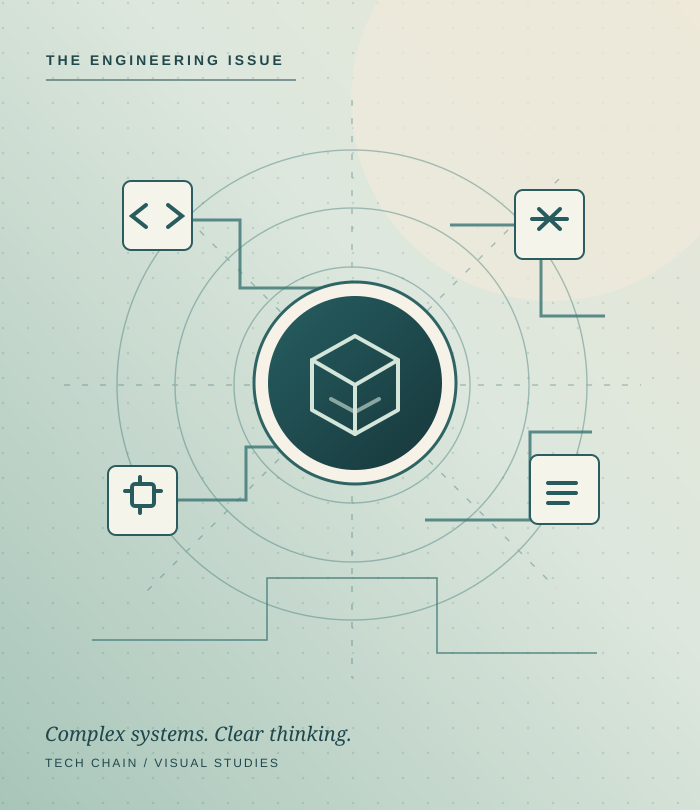

Engineering / 8 mar 2026
↗Em destaque / Engineering
Gerando Thread Dumps Programaticamente com a Nova API do Java
Uma perspectiva prática sobre diagnóstico de performance, deadlocks e travamentos em aplicações Java.
Explorar o artigo
TECH CHAIN / ENGINEERINGEDITION 001
O acervo
Ver acervo Últimas publicações.
Engineering / 8 fev 2026
↗O Dilema da Complexidade: Quando Microsserviços Não Valem a Pena
Engineering / 8 jan 2026
↗O AI Cloud Code: Um Projeto Ambicioso com Desafios
Engineering / 4 nov 2025
↗Os Perigos do Uso do AI para Escrita de Código: Um Desafio para Desenvolvedores Seniores
Uma linha editorial simples
Profundidade em vez de volume.
01
Ideias
Artigos e análises técnicas que respondem a perguntas reais de engenharia.
02
Pessoas
Espaço futuro para perfis e entrevistas de interesse editorial independente.
03
Contexto
Clareza sobre autoria, datas, fontes e o tipo de conteúdo publicado.